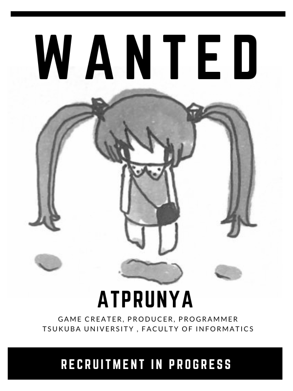

About Me
- 本名：阿曽 祥大
- 年齢：18
- 興味：ゲーム開発・カウンターカルチャー・コント
Career
- 2022/3 芝中学校 卒業
- 2025/3 芝高等学校 卒業
- 2025/4 筑波大学情報学群知識情報・図書館学類 入学
Achievements
2024年度(高3)
- ITスーパーエンジニア・サポートプログラム “すごうで” 採択
- Panasonic “100BANCH” 採択
- 京都精華大学主催 SEIKA AWARD 2作品で入選
2023年度(高2)
- iGEM(合成生物学の世界大会)でフランス渡航。世界一位(Grand Prize)獲得 (Japan-Unitedとして)
- 読売新聞・東和薬品・横河電機主催「第5回未来と健康のための高校生ビジネスコンテスト」 個人出場。グランプリ獲得
- アーツカレッジヨコハマ主催「高校生ITアプリアイデアコンテスト」個人出場。最優秀賞を獲得。
- サイバーエージェント社の若手エンジニア支援プログラム”CA Tech Lounge” 採択
- Makers University u-18 佐俣アンリ奨学金 採択
- 東急主催 QWS Challenge #16 採択
- 京都精華大学主催 SEIKA AWARD エッセイ部門 奨励賞
- 千葉大学GSCプログラム 修了
Skills
-
Programming
- language: Python, C#, C
- Engine: Unity, Decker
- JSをそこまで使わない一般的なものであればweb開発も可能です
-
Communication & Collaboration
- English(英検準一級を所持しています。高度な会話でなければ基本的に可能です)
- チーム開発経験
- イベント主催経験
- Larva06でのオフラインイベントや、部長を務めていた落語研究部での公演を企画した経験があります。
- プレゼンテーションがかなり得意です。
- 何かを認識して、抽象化して説明したり、応用したりするのが得意です。
-
Writing
- Larva06を中心に、さまざまな媒体でwebライティングを行ってきました。
- また、いくつかのゲームで脚本を担当しています。
- 落語研究部漫才やコントなどの執筆を行ってきたこともあり、コメディ色の強いものが得意です。
-
Others
- 人と仲良くなって何か新しいことをやるのが好きです
- 漫画やゲーム、音楽といったサブカルチャー、ハッカーカルチャーをはじめとしたカウンターカルチャーがとても好きです。
Projects
- MEETME
- iGEM Japan-United
- sizzurp dolls
- rurukiki
- Larva06.com
- 創設者。一般社団法人lirfaとして法人化。
- 以下に執筆した記事
- エッセイ
- 同人でのゲーム開発プロジェクト
- 音楽ユニットのプロデュース
- アーティストのwebサイト開発